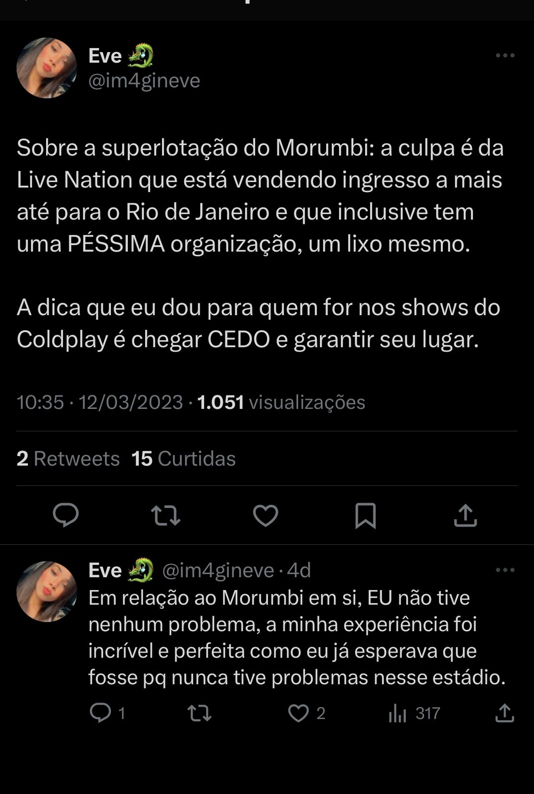

Alguns fãs do Coldplay não conseguem assistir ao show por conta de superlotação no stádio
Alguns fãs do Coldplay tiveram dificuldades para acessarem ao estádio do Morumbi em São Paulo, na noite de sexta-feira, 10/03. O show foi o primeiro de uma maratona que a banda irá fazer no Brasil. As apresentações iriam ocorrer no mês de outubro de 2022 mas tiveram que ser adiadas em decorrência de uma infecção pulmonar do vocalista Chris Martin. A médica Carla Rodrigues foi uma das que só conseguiu assistir a metade do show. "Eu cheguei 14:00 para o show começar ás 20:30 e só conseguir entrar no estádio para assistir ao show 21:00, mas ainda sim estava muito lindo o show".

Outro relato foi o de Eve que também acabou chegando atrasada no show, essas duas mulheres foram uma das muitas que acabaram entrando atrasados no show por falta de organização do local.
Cantor Thw Weekend afirma que o filme Avatar o ajudou a superar um dos momentos mais difíceis de sua vida
Quando James Cameron o convidou para fazer parte do filme, o cantor não hesitou
Em uma entrevista com o Hollywood Reporter, o cantor explicou como o filme original (lançado em 2009), conseguiu fazer isso "Essa com certeza foi a época (2009) mais sombria da minha vida, disse ele. The Weekend se recordou de ter largado a escola e também não tinha uma casa para morar. "Eu não sabia se teria sucesso como músico, na verdade eu não sabia se seria capaz de viver para ver o amanhã", afirmou ele "Eu me lembro de que consegui assistir ao filme no cinema, não me lembro de como consegui entrar no cinema, mas isso ficou guardao na minha memória".
Dois anos após o lançamento de Avatar, The Weekend marcou um grande avanço com sua mixtape alternativa de ReB acalamada pela crítica, House off Baloons. Logo após isso, The Weekend conseguiu um contrato com uma gravadora, se tornando o sucesso n°1 nas paradas pop, com muitos prêmios, turnês e shows marcados
The Weekend fez um remix de sua música "Die for You" com a cantora, atriz e compositora Ariana Grande e chegou nos top 10 musicas na Billboard em menos de uma semana
Lollapaloza conta com apresentações confirmadas de Billie Eilish, Rosalia, entre muitos outros artistas
Este Lollapaloza será inesquecível e contará com a presença de artistas confirmados como: Billie Eilish, Rosalía, Lil Nas X, Drake, Blink-182 e Tame Impala, o festival ocorrerá entre os dias 24,25 e 26 de março de 2023.
O Lollapaloza será no Autódromo de Interlagos, em São Paulo. Você poderá assistir aos shows no Globoplay, Mtv, MG tv 1°edição e MG tv 2°edição
Justin Bieber é diagnosticado com doença rara, mostra sua recuperação de mobilidade do rosto
Sua condição foi uma das razões pela qual Justin Bieber cancelou sua turnê, que invclluia apresentações na Polônia, Brasil, Reino Unido, entre outros. Em junho de 2022, meses antes de Justin vir se apresentar no Brasil, no Rock in Rio, ele surgiu nas redes sociais mostrando metade de seu rosto paralizado. Graças a essa condição, ele anunciou que daria um tempo na sua turnê "Justice", mas que retornaria daqui a alguns meses, depois que Justin se apresentou no Brasil, em setembro de 2022, ele de fato deu uma pausa em wsuas turnês
Justin agradeceu ao apoio dos fãs e disse que iria se cuidar e cumprir todo o seu tratamento com cuidado e direitinho